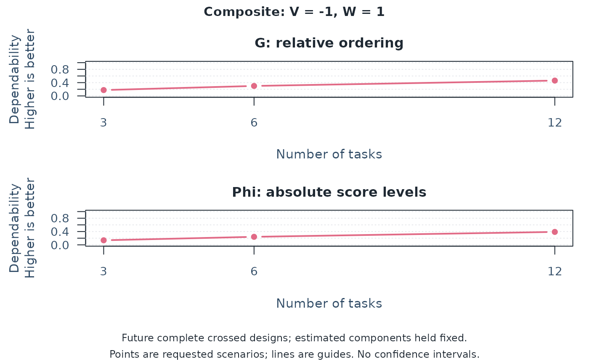
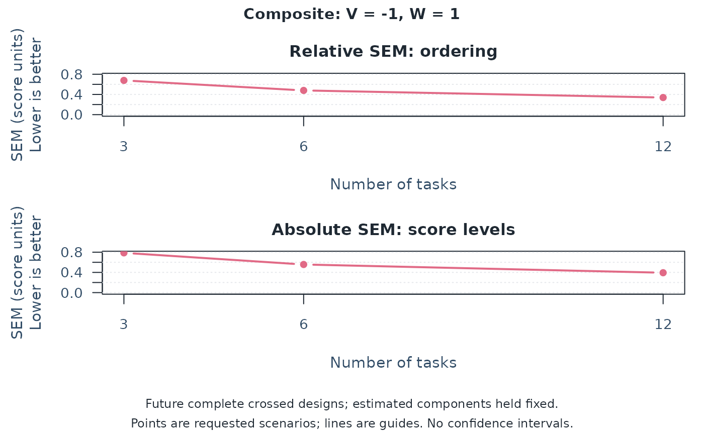
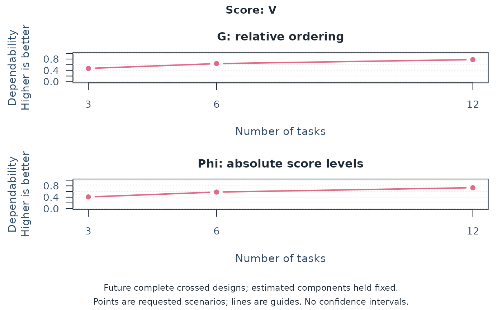
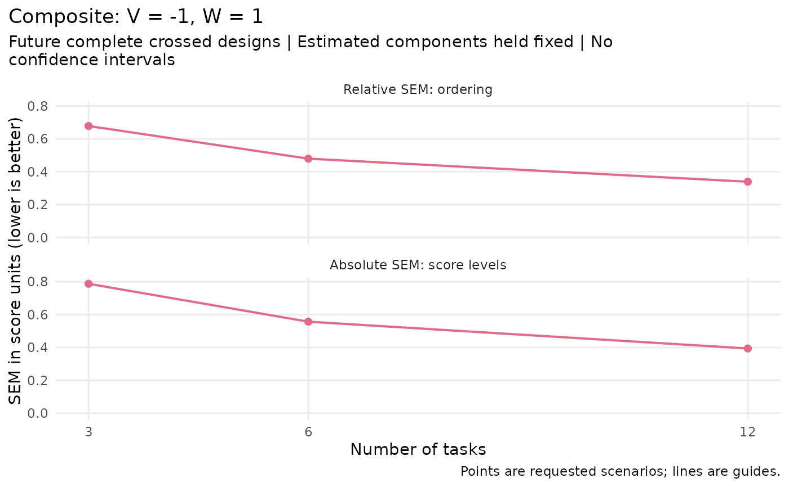
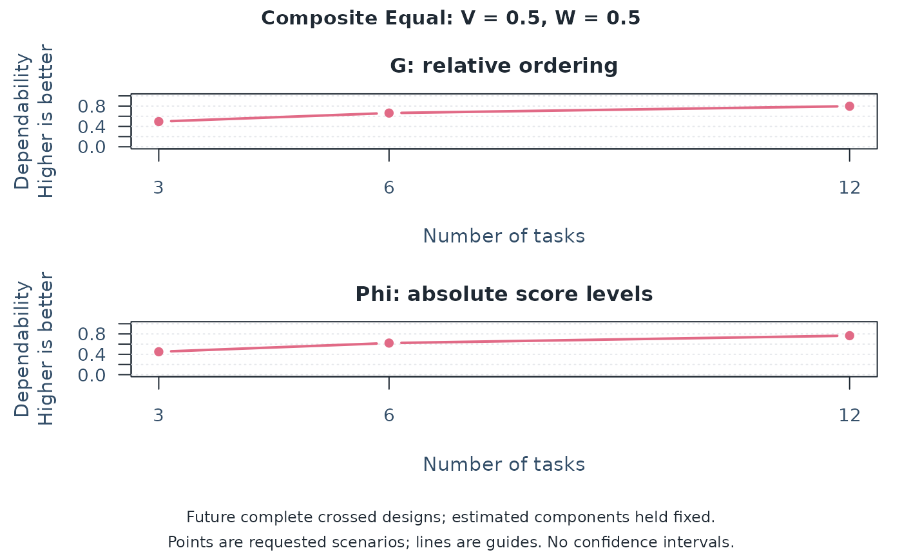
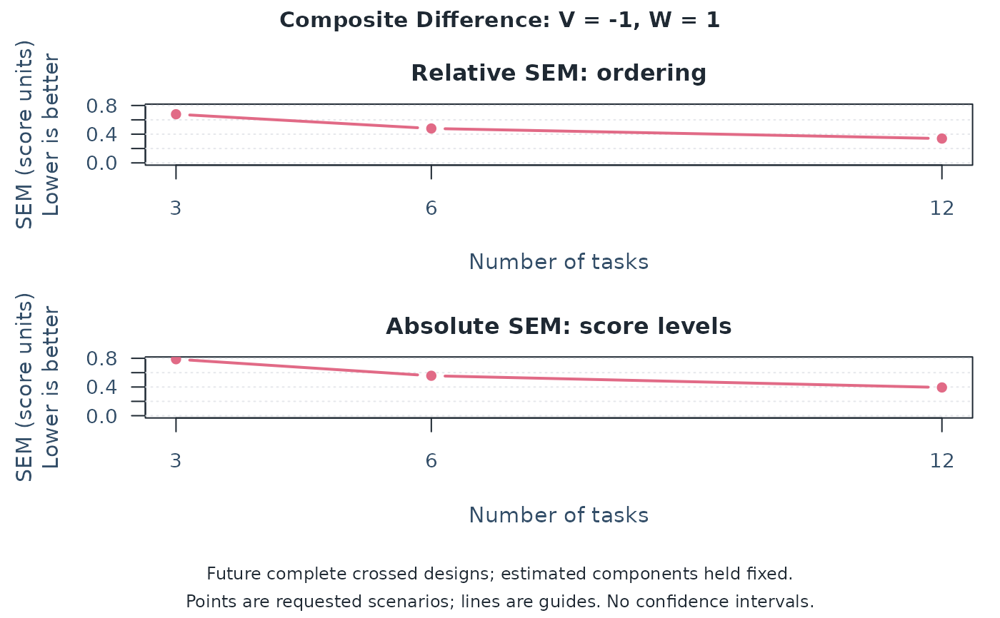
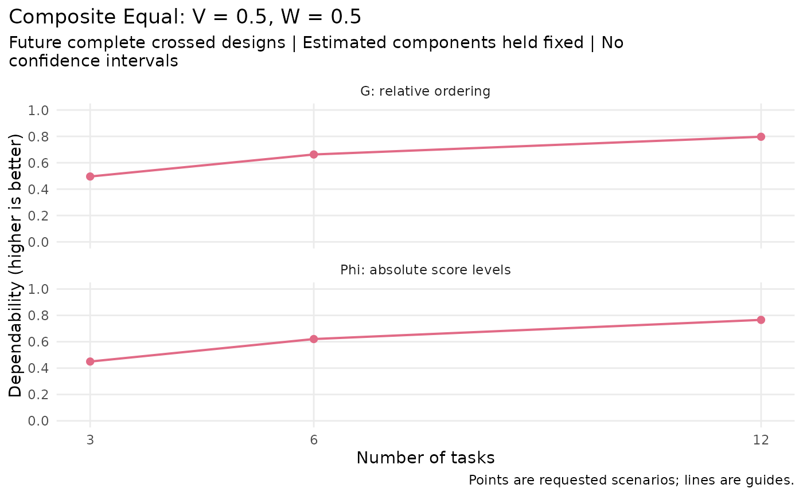

Compare measurement-condition counts in a multivariate D-study
Source:R/api-plotting-multivariate-d-study.R
plot.mfrm_multivariate_d_study.RdSee how a planned change in the number of tasks, raters, or other conditions affects the
dependability of a mean score. Plot an existing D-study result; no model
is refitted. Start with plot(d) for G and Phi, then use
plot(d, type = "sem") to examine error in score units. If the result has
several composites, select one explicitly with composite.
Arguments
- x
A result from
mfrm_multivariate_d_study().- type
"coefficients"shows G and Phi in separate panels;"sem"shows relative and absolute standard errors of measurement.- score
A single original score name. An explicit name always selects an original score, even if a composite has the same name. If both
scoreandcompositeareNULL, select the sole composite, or the first score when there are no composites. Several composites require an explicit selection. The title identifies the selection and any composite weights. Call the method again to inspect another score or composite.- x_var
A count column in
x$design_grid:"Tasks"/"Raters"for the task/rater interface, or a facet label supplied throughfacets. By default use the last varying count column, or the last column if none varies. A one-facet result permits only its included facet. Each line holds the other facet count constant.- draw
Draw the plot when
TRUE;FALSEonly returns its data.- preset
Plot style:
"standard","publication","compact", or"monochrome". Point shapes and line types also distinguish counts.- composite
A single composite name from
x$coefficients, as defined by a weight-matrix column, or"Composite"for vector weights. Supply eitherscoreorcomposite, not both.- ...
Reserved for future use; additional arguments are rejected.
Value
Invisibly, an mfrm_plot_data object. Use plot_data() to extract
table (the selected score/composite), series (one row per scenario and
plotted metric, including missing values), unavailable, design_grid,
weights, score identity, axis/group names, labels, component_note,
and legend settings. In series, Status is specific to Metric;
table retains the original row status and metric-specific columns.
weights contains the selected composite's named weight vector,
or NULL when plotting an original score.
as_ggplot() preserves these comparisons for editing or export with
the optional ggplot2 package; for example, as_ggplot(d, type = "sem").
Details
G describes consistency of relative ordering: for example, ranking examinees. Phi also includes shifts caused by easier tasks or more lenient raters and concerns absolute score levels. Higher coefficients indicate greater dependability under the fitted model; neither gives the probability of a correct pass/fail decision. No universal acceptable cutoff is drawn.
SEM is the square root of error variance. Lower values indicate less error in the units of the selected mean score or composite. Relative SEM concerns ordering; absolute SEM also includes condition-wide shifts. SEM is not a confidence interval for G or Phi. The two SEM panels share a scale, but different scores or differently scaled composites need not have comparable units. Weights are not normalized. Changing weights can also change the meaning of the score; a higher G or Phi alone does not justify a new set of weights.
Points represent only the supplied scenarios. Lines connect them as visual guides within a fixed count of the other facet, without fitting a curve or evaluating intermediate designs. For example, with tasks on the horizontal axis, compare points along one line to change tasks while keeping raters constant. Compare lines at the same task count to change raters.
Scenarios retain the G-study's crossed or nested structure, with complete balanced future conditions shared by every person and score. For a nested facet, the axis or legend says "per" to identify its count within each parent, for example "Raters per Task"; this is not the total rater pool size. Even when the G-study used incomplete data, the figure does not describe reliability of that sparse roster. Projections hold estimated covariance components fixed and have no sampling confidence intervals. A flattening curve can indicate limited gains from adding one facet alone; it does not identify a cost-effective optimum. The highest point alone does not account for uncertainty in the estimated components. Read the size of differences as well as their ordering. Equal products of rater and task counts give equal rating counts, not necessarily equal examinee burden or total cost. Unavailable candidates prevent a complete comparison for that metric.
Unavailable estimates stay missing. A panel with no estimates states the
reason; otherwise a margin note reports unavailable scenarios. The returned
unavailable table preserves their counts, metrics, and Status values.
Each panel uses its metric's status, so an unavailable Phi does not hide
an available G. Non-PSD component matrices are noted separately on the
figure; inspect x$component_diagnostics before using raw projections.
Increasing planned counts does not repair those component estimates.
Missing values are never plotted as zero. Previously saved D-study objects
retain their recorded values and availability: rerun
mfrm_multivariate_d_study() on the saved G-study to apply current rules.
Examples
# Question: how much would doubling the common tasks change dependability?
tasks <- read.csv(system.file("extdata", "mgenova-table12.csv", package = "mfrmr"))
g <- mfrm_multivariate_gstudy(tasks, c("V", "W"), rater = NULL)
d <- mfrm_multivariate_d_study(g, data.frame(Tasks = c(3, 6, 12)),
weights = c(V = -1, W = 1))
plot(d) # Default: the difference W minus V; higher G/Phi is better.

plot(d, type = "sem") # Error in difference-score units; lower is better.

plot(d, score = "V") # Inspect an original score separately.

values <- plot_data(plot(d, draw = FALSE))
values$table # Exact values and availability, rather than reading off a line.
#> Scenario Tasks Kind Score UniverseVariance RelativeErrorVariance
#> 3 1 3 Composite Composite 0.09851852 0.4597531
#> 6 2 6 Composite Composite 0.09851852 0.2298765
#> 9 3 12 Composite Composite 0.09851852 0.1149383
#> AbsoluteErrorVariance G Phi RelativeSEM AbsoluteSEM Status
#> 3 0.620 0.1764706 0.1371134 0.6780509 0.7874008 Available
#> 6 0.310 0.3000000 0.2411605 0.4794544 0.5567764 Available
#> 9 0.155 0.4615385 0.3886048 0.3390255 0.3937004 Available
#> GStatus PhiStatus RelativeSEMStatus AbsoluteSEMStatus ComponentPSD
#> 3 Available Available Available Available TRUE
#> 6 Available Available Available Available TRUE
#> 9 Available Available Available Available TRUE
if (requireNamespace("ggplot2", quietly = TRUE)) {
p <- as_ggplot(d, type = "sem")
print(p)
# ggplot2::ggsave("d-study-sem.png", p, width = 7, height = 7, dpi = 300)
}

# A weight matrix names several choices; explicitly select the plotted one.
alternatives <- mfrm_multivariate_d_study(g, data.frame(Tasks = c(3, 6, 12)),
weights = cbind(Equal = c(V = 0.5, W = 0.5), Difference = c(V = -1, W = 1)))
plot(alternatives, composite = "Equal")

plot(alternatives, composite = "Difference", type = "sem")

if (requireNamespace("ggplot2", quietly = TRUE)) {
print(as_ggplot(alternatives, composite = "Equal"))
}
